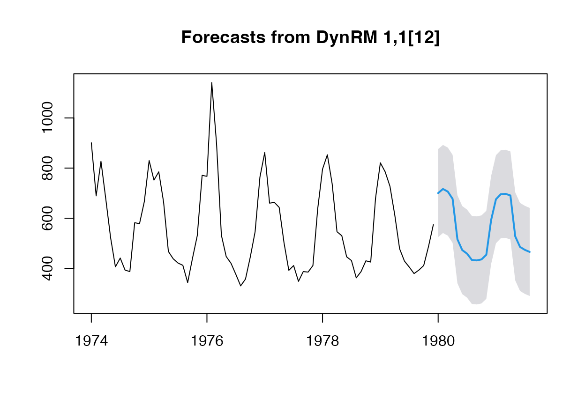
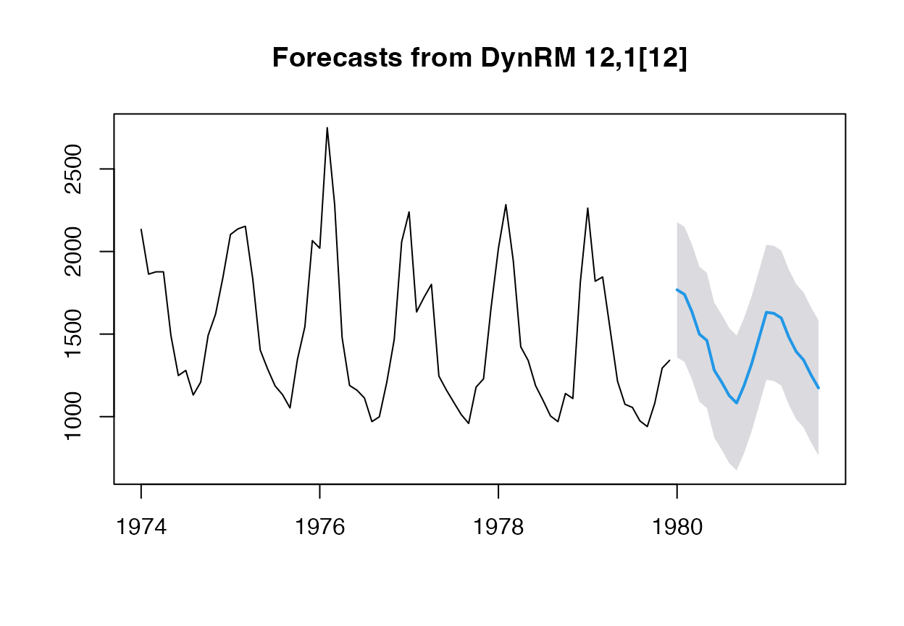
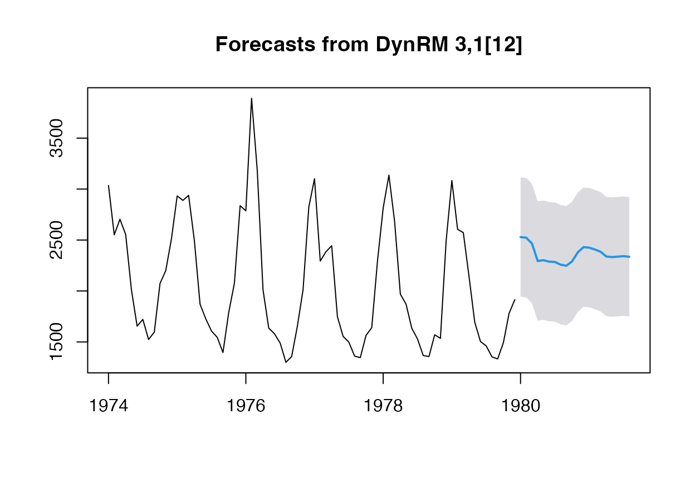
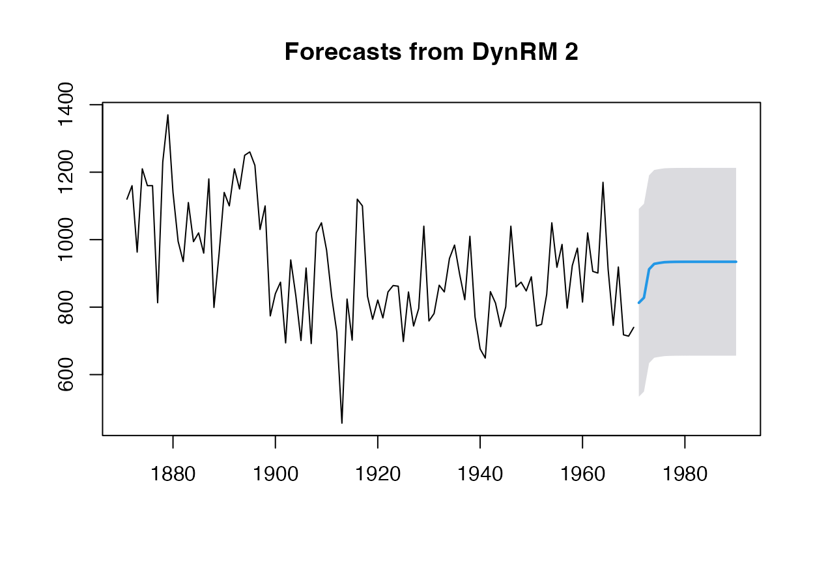

tsrvfl.Rmd## Loading required package: glmnet## Loading required package: Matrix## Loaded glmnet 4.1-10## Loading required package: survival## Registered S3 method overwritten by 'quantmod':
## method from
## as.zoo.data.frame zoo


